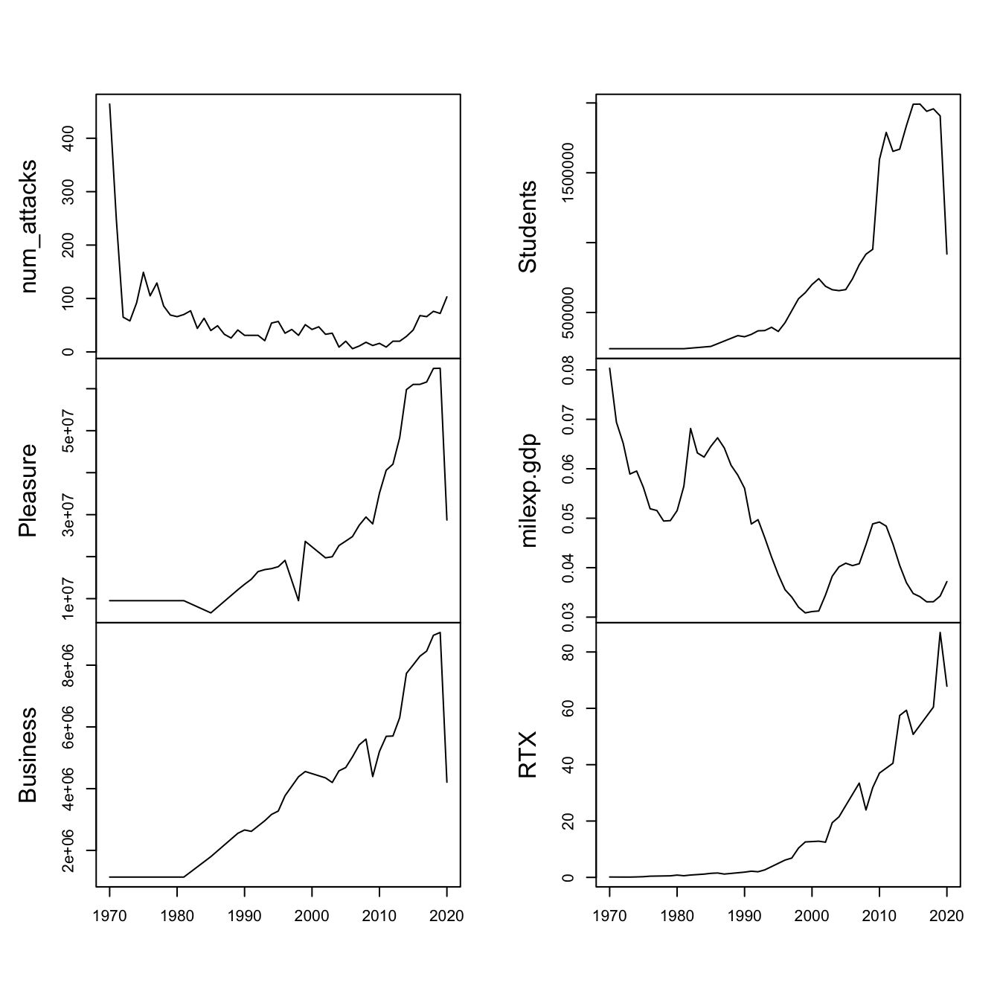
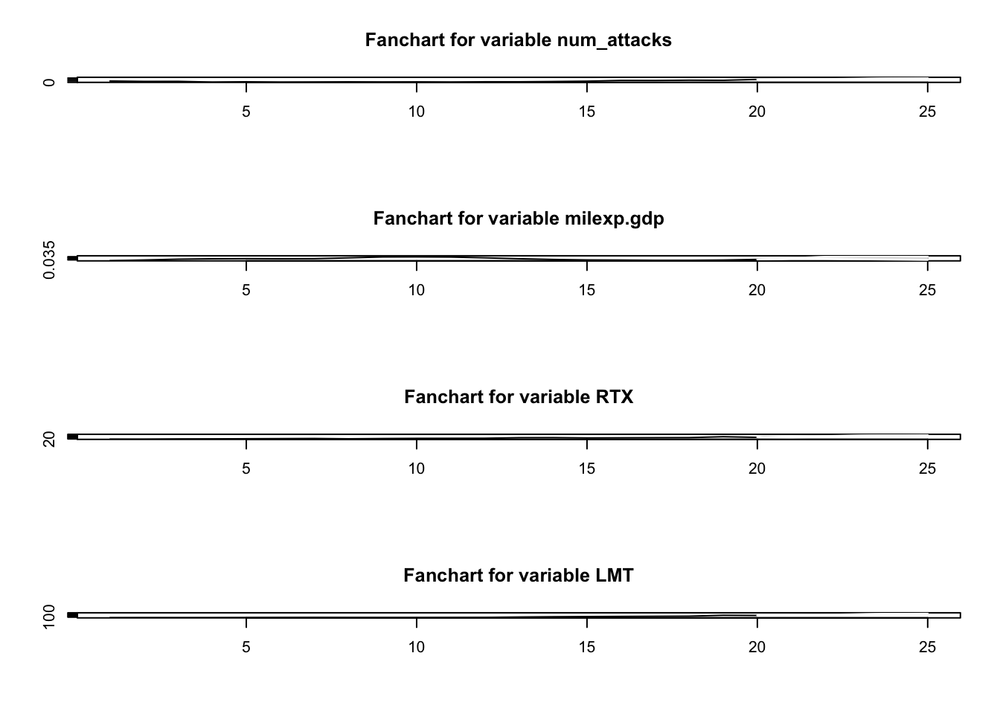

ARIMAX/SARIMAX/VAR Models
Summary
In the previous ARIMA/SARIMA modeling section, we analyzed a univariate time series of monthly terrorist attacks in the US that occurred from 1970 to 2020. Although the SARIMA model performed better than the ARIMA model, due to the added seasonal Moving Average term, we can gauge our understanding of the monthly terrorist attacks better by including endogenous variables! Endogenous variables are those that are determined within the system being studied and are influenced by other variables in the system. These variables are typically modeled as being interdependent and are affected by changes in the values of other variables. In the case of terrorist attacks and casualties suffered from them, potential endogenous variables could include USA military expenditure, non-immigrant admissions data, and the performance of major weapons contracts, including Lockheed Martin, Boeing, and Raytheon Technologies. With the help of a literature review, (Lit?) it can be reinforced thoroughly and plausibly that the aforementioned endogenous variables have, in fact, not only been employed but also found to have effects related to terrorism in prior research.
Code for this section can be found here
Literature Review
The Stimson Study Group’s Report on Counterterrorism Spending (Counterterrorism Spending and Center 2018) in the post-9/11 era provides valuable insights into the amount of resources the United States devotes to counterterrorism efforts. The report found that the US government spent over USD2.8 trillion on counterterrorism efforts from 2002 to 2017, which represents a significant portion of the country’s overall military budget during that period. Specifically, the report notes that counterterrorism spending accounted for 17% to 23% of the US defense budget each year between 2002 and 2017. Hartung (2021) (Hartung 2021) found that the “Global War on Terror”, which emerged in the early 2000s as a result of the 9/11 attacks, had a significant impact on the political environment, resulting in a surge in the Pentagon’s budget, the largest component of the US military budget. This increased funding was largely directed towards military contractors, Lockheed Martin, Boeing, General Dynamics, Raytheon Technologies, and Northrop Grumman, who were enlisted to aid in the efforts. Since Fiscal Year 2001, the total expenditures of the Pentagon for all purposes have surpassed USD14.1 trillion (measured in 2021 dollars). Out of this sum, USD4.4 trillion was used for weapons procurement and research and development (R&D), which mainly benefited corporate contractors. The rest of the funds were utilized for paying and providing benefits to military and civilian personnel and other expenses, necessary for operating and maintaining the United States military. Congressional Research Service (CRS) estimates that in FY2020, the spending for contractors grew to $420 billion - well over half of the total Pentagon budget. Therefore, the biggest financial beneficiaries of the post-9/11 military spending surge have been the aforementioned weapons contractors.
Furthermore, several papers have discussed and analyzed the relation between military spending or counterterrorism efforts with transnational terrorism prior to the 9/11 attacks. Li and Schaub (2004) (Li and Schaub 2004) employed GOVCAPABILITY, a control variable in their Pooled Time-Series Analysis , that comprised military manpower and military expenditures for 112 countries from 1975 to 1997. Because the variable captured state military and economic strength, it represented a proxy that the government could use for combating terrorism. Gaibulloev, K., Sandler, T., & Sul, D. (2014) (gaibulloev_sandler_sul_2014Such?) challenged extant literature about terrorism and its impact on economic growth that suffered from Nickell Bias, a type of bias that arises in statistical models when the independent variable is measured with error, and cross-sectional dependence, a statistical issue that arises in panel data analysis when the individual units (e.g., countries or firms) in the panel are not completely independent of one another. They mentioned that cross-sectional dependence is apt to affect other variables, such as democracy, threat, military spending, and financial measures. However, when Nickell bias and cross-sectional dependence are addressed, terrorism has no influence whatsoever on economic growth.
Therefore, the perused literature about counterterrorism and military spending underscores the importance of counterterrorism efforts, including funding weapons contractors, in shaping the country’s military spending priorities, particularly in the wake of the 9/11 terrorist attacks. By highlighting the amount of resources devoted to counterterrorism, these reports and papers help us understand how the overall US budget and military budget are allocated and the policy decisions that drive those allocations. However, it might also possible that during the VAR model building phase of this section, we find that military spending may not be a significant indicator of the number of casualties stemming from terrorist attacks in the Global Terrorism Database™ (GTD) (“Codebook Methodology Inclusion Criteria and Variables - UMD,” n.d.).
Secondly, Nowrasteh (2019) (Nowrasteh 2019) found, by carefully analyzing the GTD, that the chance of being murdered by a tourist on a B visa, the most common tourist visa, is about 1 in 4.1 million per year. Compared to foreign‐born terrorists, the chance of being murdered by a native‐born terrorist is about 1 in 28 million per year. Moreover, there were 192 foreign‐born terrorists, relative to the 788 native-born terrorists, who planned, attempted, or carried out attacks on U.S. soil from 1975 through 2017. Through a cost-benefit risk analysis, it was also found that the combined human, property, business, and economic costs of terrorism from 1975 through 2017 are estimated at USD216.58 billion. Spread over 43 years, the average annual cost of terrorism is USD5.04 billion, which is about one‐hundredth the minimum estimated yearly benefit of $553.9 billion from immigration and tourism. Therefore, foreign‐born terrorism on U.S. soil is a low‐probability event that imposes high costs on its victims, despite relatively small risks.
VAR Model Justification
Using a VAR model over an ARIMAX model for this research has a multitude of benefits, including:
Simultaneous modeling of multivariate time series: VAR allows for the simultaneous modeling of multiple endogenous variables, whereas ARIMAX (Autoregressive Integrated Moving Average with Explanatory Variables) can only model one dependent variable at a time. This means that VAR can capture the complex relationships between multiple variables that may be influencing each other.
Better handling of lags: VAR can handle multiple lags in the data more efficiently than ARIMAX. This is important in the case of studying the impact of terrorist attacks, as the effects of a single attack may persist over a longer period of time and may have delayed impacts on different variables.
More robust to missing data: VAR can handle missing data more effectively than ARIMAX, as it does not require the same level of complete data in order to estimate the model parameters. This is particularly relevant in the case of studying the impact of terrorist attacks, as data may be missing or incomplete for certain variables in certain time periods.
Better captures dynamic relationships: VAR is better suited for capturing the dynamic relationships between variables over time, whereas ARIMAX can only capture the static relationships between variables at a particular point in time. This is important in the case of studying the impact of terrorist attacks, as the relationships between variables may change over time due to factors such as changes in government policies or public opinion.
No clear seasonality: Another reason why the VAR model is justified is that there may not be a clear seasonality pattern in the data related to terrorist attacks. This means that traditional time-series models may not be effective in capturing the complex relationships between the variables. The VAR model, on the other hand, does not rely on a specific seasonal pattern and can account for the complex relationships between variables without requiring seasonal adjustments. Moreover, the data that will be analyzed is aggregated yearly from 1970 to 2020, which makes it more difficult to identify and capture seasonal patterns. Yearly data may also be influenced by other factors that are not related to seasonality, such as long-term trends or cyclical patterns, that occur over longer periods of time. This can make it more challenging to distinguish between seasonal effects and other underlying factors that may be driving the data.
Non-linearity: The relationships between variables in the case of terrorist attacks may not be linear, and traditional linear models may not be able to capture the non-linear effects. The VAR model is capable of modeling non-linear relationships between variables and can account for the complex interactions that may exist between them.
Building the VAR Model
Time Series Plots

Pairs Plot
Fitting VAR Model
Here we use the VARselect() function to find the best p to fit VAR(p). We will choose a maximum lag of 10 and check which p value returns lowest AIC.
$selection
AIC(n) HQ(n) SC(n) FPE(n)
2 1 1 2
$criteria
1 2 3 4 5 6 7 8
AIC(n) 1.091791 1.045844 1.204512 1.335694 1.440519 1.577721 1.728764 1.829026
HQ(n) 1.213545 1.228475 1.448020 1.640078 1.805780 2.003859 2.215779 2.376919
SC(n) 1.426146 1.547377 1.873223 2.171582 2.443585 2.747965 3.066186 3.333626
FPE(n) 2.983318 2.857871 3.369113 3.879711 4.374444 5.128738 6.148074 7.078170
9 10
AIC(n) 1.974601 1.548992
HQ(n) 2.583371 2.218638
SC(n) 3.646379 3.387947
FPE(n) 8.637254 6.049901Now, we will fit VAR(1), VAR(2), and VAR(3):
VAR(1) output:
VAR Estimation Results:
=========================
Endogenous variables: num_fatal, milexp.gdp
Deterministic variables: both
Sample size: 50
Log Likelihood: -156.054
Roots of the characteristic polynomial:
0.8623 0.08703
Call:
VAR(y = var_ts, p = 1, type = "both")
Estimation results for equation num_fatal:
==========================================
num_fatal = num_fatal.l1 + milexp.gdp.l1 + const + trend
Estimate Std. Error t value Pr(>|t|)
num_fatal.l1 -9.631e-02 1.465e-01 -0.657 0.5143
milexp.gdp.l1 -1.401e+04 7.687e+03 -1.823 0.0749 .
const 9.409e+02 5.176e+02 1.818 0.0756 .
trend -6.862e+00 6.433e+00 -1.067 0.2916
---
Signif. codes: 0 '***' 0.001 '**' 0.01 '*' 0.05 '.' 0.1 ' ' 1
Residual standard error: 422.1 on 46 degrees of freedom
Multiple R-Squared: 0.07287, Adjusted R-squared: 0.01241
F-statistic: 1.205 on 3 and 46 DF, p-value: 0.3185
Estimation results for equation milexp.gdp:
===========================================
milexp.gdp = num_fatal.l1 + milexp.gdp.l1 + const + trend
Estimate Std. Error t value Pr(>|t|)
num_fatal.l1 6.347e-07 1.189e-06 0.534 0.596
milexp.gdp.l1 8.716e-01 6.238e-02 13.971 <2e-16 ***
const 6.091e-03 4.200e-03 1.450 0.154
trend -3.141e-05 5.221e-05 -0.602 0.550
---
Signif. codes: 0 '***' 0.001 '**' 0.01 '*' 0.05 '.' 0.1 ' ' 1
Residual standard error: 0.003425 on 46 degrees of freedom
Multiple R-Squared: 0.9185, Adjusted R-squared: 0.9132
F-statistic: 172.9 on 3 and 46 DF, p-value: < 2.2e-16
Covariance matrix of residuals:
num_fatal milexp.gdp
num_fatal 1.781e+05 -9.236e-02
milexp.gdp -9.236e-02 1.173e-05
Correlation matrix of residuals:
num_fatal milexp.gdp
num_fatal 1.00000 -0.06388
milexp.gdp -0.06388 1.00000VAR(2) output:
VAR Estimation Results:
=========================
Endogenous variables: num_fatal, milexp.gdp
Deterministic variables: both
Sample size: 49
Log Likelihood: -145.735
Roots of the characteristic polynomial:
0.7139 0.5935 0.3244 0.3244
Call:
VAR(y = var_ts, p = 2, type = "both")
Estimation results for equation num_fatal:
==========================================
num_fatal = num_fatal.l1 + milexp.gdp.l1 + num_fatal.l2 + milexp.gdp.l2 + const + trend
Estimate Std. Error t value Pr(>|t|)
num_fatal.l1 -0.1154 0.1512 -0.763 0.4495
milexp.gdp.l1 -7542.4239 18769.9771 -0.402 0.6898
num_fatal.l2 -0.1020 0.1511 -0.675 0.5031
milexp.gdp.l2 -9590.1881 18131.7059 -0.529 0.5996
const 1143.1762 569.6714 2.007 0.0511 .
trend -8.3498 6.8180 -1.225 0.2274
---
Signif. codes: 0 '***' 0.001 '**' 0.01 '*' 0.05 '.' 0.1 ' ' 1
Residual standard error: 431.8 on 43 degrees of freedom
Multiple R-Squared: 0.09241, Adjusted R-squared: -0.01312
F-statistic: 0.8757 on 5 and 43 DF, p-value: 0.5054
Estimation results for equation milexp.gdp:
===========================================
milexp.gdp = num_fatal.l1 + milexp.gdp.l1 + num_fatal.l2 + milexp.gdp.l2 + const + trend
Estimate Std. Error t value Pr(>|t|)
num_fatal.l1 7.472e-07 1.061e-06 0.704 0.48517
milexp.gdp.l1 1.274e+00 1.317e-01 9.673 2.35e-12 ***
num_fatal.l2 6.724e-07 1.060e-06 0.634 0.52932
milexp.gdp.l2 -3.739e-01 1.272e-01 -2.938 0.00529 **
const 5.674e-03 3.998e-03 1.419 0.16305
trend -5.050e-05 4.785e-05 -1.055 0.29711
---
Signif. codes: 0 '***' 0.001 '**' 0.01 '*' 0.05 '.' 0.1 ' ' 1
Residual standard error: 0.00303 on 43 degrees of freedom
Multiple R-Squared: 0.9355, Adjusted R-squared: 0.928
F-statistic: 124.7 on 5 and 43 DF, p-value: < 2.2e-16
Covariance matrix of residuals:
num_fatal milexp.gdp
num_fatal 1.865e+05 -8.394e-02
milexp.gdp -8.394e-02 9.183e-06
Correlation matrix of residuals:
num_fatal milexp.gdp
num_fatal 1.00000 -0.06415
milexp.gdp -0.06415 1.00000VAR(3) output:
VAR Estimation Results:
=========================
Endogenous variables: num_fatal, milexp.gdp
Deterministic variables: both
Sample size: 48
Log Likelihood: -142.005
Roots of the characteristic polynomial:
0.7981 0.7981 0.4925 0.4925 0.4315 0.3136
Call:
VAR(y = var_ts, p = 3, type = "both")
Estimation results for equation num_fatal:
==========================================
num_fatal = num_fatal.l1 + milexp.gdp.l1 + num_fatal.l2 + milexp.gdp.l2 + num_fatal.l3 + milexp.gdp.l3 + const + trend
Estimate Std. Error t value Pr(>|t|)
num_fatal.l1 -1.331e-01 1.571e-01 -0.848 0.4017
milexp.gdp.l1 -3.862e+03 2.260e+04 -0.171 0.8652
num_fatal.l2 -1.239e-01 1.573e-01 -0.787 0.4357
milexp.gdp.l2 -1.181e+04 3.451e+04 -0.342 0.7341
num_fatal.l3 -1.095e-01 1.569e-01 -0.698 0.4892
milexp.gdp.l3 -4.098e+03 2.051e+04 -0.200 0.8427
const 1.310e+03 6.349e+02 2.064 0.0456 *
trend -9.324e+00 7.342e+00 -1.270 0.2114
---
Signif. codes: 0 '***' 0.001 '**' 0.01 '*' 0.05 '.' 0.1 ' ' 1
Residual standard error: 443.6 on 40 degrees of freedom
Multiple R-Squared: 0.1086, Adjusted R-squared: -0.04738
F-statistic: 0.6963 on 7 and 40 DF, p-value: 0.6747
Estimation results for equation milexp.gdp:
===========================================
milexp.gdp = num_fatal.l1 + milexp.gdp.l1 + num_fatal.l2 + milexp.gdp.l2 + num_fatal.l3 + milexp.gdp.l3 + const + trend
Estimate Std. Error t value Pr(>|t|)
num_fatal.l1 5.676e-07 1.084e-06 0.524 0.6034
milexp.gdp.l1 1.205e+00 1.559e-01 7.725 1.87e-09 ***
num_fatal.l2 5.849e-07 1.086e-06 0.539 0.5931
milexp.gdp.l2 -1.376e-01 2.382e-01 -0.578 0.5668
num_fatal.l3 -1.487e-07 1.083e-06 -0.137 0.8915
milexp.gdp.l3 -1.966e-01 1.416e-01 -1.388 0.1727
const 7.824e-03 4.381e-03 1.786 0.0817 .
trend -7.158e-05 5.067e-05 -1.413 0.1654
---
Signif. codes: 0 '***' 0.001 '**' 0.01 '*' 0.05 '.' 0.1 ' ' 1
Residual standard error: 0.003061 on 40 degrees of freedom
Multiple R-Squared: 0.9351, Adjusted R-squared: 0.9237
F-statistic: 82.28 on 7 and 40 DF, p-value: < 2.2e-16
Covariance matrix of residuals:
num_fatal milexp.gdp
num_fatal 1.968e+05 -1.064e-01
milexp.gdp -1.064e-01 9.371e-06
Correlation matrix of residuals:
num_fatal milexp.gdp
num_fatal 1.00000 -0.07837
milexp.gdp -0.07837 1.00000K-Fold Cross Validation and Model Diagnostics
| P Values | RMSE | AIC |
|---|---|---|
| 1 | 842.84 | 226.09 |
| 2 | 869.69 | 216.43 |
| 3 | 900.83 | 216.98 |
Lowest Test RMSE is given by p=1; however, it also has highest AIC score on the train set. Because test set performance is best and it is the simplest model, we shall choose this.
Forecasting Chosen Model (p=1)
$num_fatal
fcst lower upper CI
[1,] 167.6021 -660.8578 996.0621 828.4600
[2,] 154.4513 -677.8052 986.7077 832.2565
[3,] 153.3720 -679.9722 986.7162 833.3442
[4,] 151.6575 -682.5675 985.8825 834.2250
[5,] 150.1764 -684.7512 985.1041 834.9277
$milexp.gdp
fcst lower upper CI
[1,] 0.03735113 0.03068326 0.04401900 0.006667872
[2,] 0.03761949 0.02864728 0.04659170 0.008972207
[3,] 0.03785150 0.02739770 0.04830531 0.010453805
[4,] 0.03805958 0.02655696 0.04956221 0.011502626
[5,] 0.03824566 0.02596832 0.05052299 0.012277336